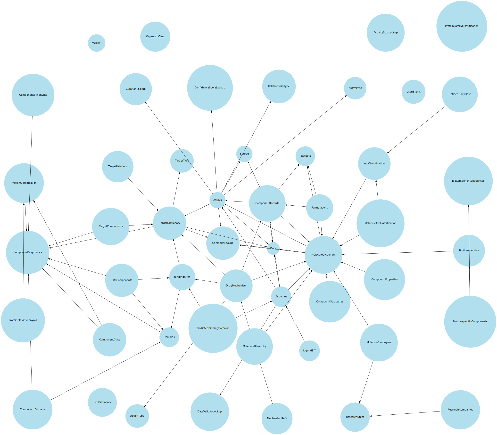

Software overview
Michał Nowotka
ChEMBL Group
EMBL-EBI
Dependency DAG

- Handle differences between SQL dialects.
- Defines ChEMBL specific datatypes.
- Implements substructure and similarity search.
- Abstracts database operations.
About SQL
SQL is the Fortran of databases - nobody likes it much, the language is ugly and ad hoc, every database supports it, and we all use it.
-- John Levine. Flex & Bison: text processing tools
Example(s) from FAQ
Retrieve all the compounds which have an IC50 bioactivity value in nM:
MoleculeDictionary.objects.filter(activities__standard_type='IC50',
activities__standard_units='nM')
SELECT DISTINCT md.molregno,
md.chembl_id,
act.standard_type,
act.standard_value,
act.standard_units
FROM activities act,
molecule_dictionary md
WHERE act.molregno = MD.molregno
AND act.standard_type = 'IC50'
AND act.standard_units = 'nM';
Migration
- Copies data from one DB to another
- Databases can run on different engines
- Taget database can be empty (no structure)
- Source database must have model defined
python manage.py migrate --source=ora --target=pg
Motivation is not easy
- Dependencies in data
- Differences in datatypes, constraints...
- Big amount of data
- Can be easily interrupted
- Parallelisation?
dependencies in ChEMBL
manage.py migrate
- Constructs dependencies DAG
- Traverses it, creating new processes
- Table data is migrated in small chunks
- Each chunk is migrated in separate transaction
- Chunk size can be modified at runtime
- Whole process can be resumed
Creating a model
- I need a model for my app/migration process
- There are lots of tables in my DB
- I'm not django expert
- How do I create model?
python manage.py reverseEngineer --database=myDB
reverseEngineer command
- Takes care about model dependencies
- Knows ChEMBL data types
- Preserves logical structrue
- Produces helpful warnings
Warnings for ChEMBL 17
- 12 different kinds of warnings
- 93 in total
- Different importance
- Some of them invalid
- No critical issues
Warnings
Thank you!
Questions?